Boundary Representation (BRep) is the standard format for Computer-Aided Design (CAD), yet reconstructing high-quality BReps from single-view images remains challenging due to the complexity of topological constraints and operation sequences.
We present Img2CADSeq, a multi-stage pipeline that overcomes these limitations by encoding CAD sequences into a three-level hierarchical codebook. Guided by an importance prioritization, this strategy values profiles over details, compressing long sequences into a stable discrete latent space. To bridge the modality gap, we leverage a coarse-to-fine point cloud intermediate, aligning 2D visual features with 3D CAD sequences via contrastive learning to condition a VQ-Diffusion model.
Supported by newly introduced CAD-220K and PrintCAD datasets, our approach ensures robust industrial domain adaptation. Extensive experiments demonstrate that Img2CADSeq significantly outperforms state-of-the-art methods, producing standard STEP files that can be directly used in commercial CAD software.
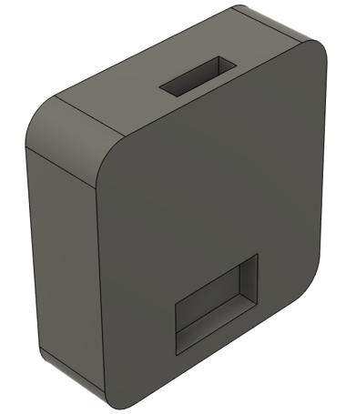
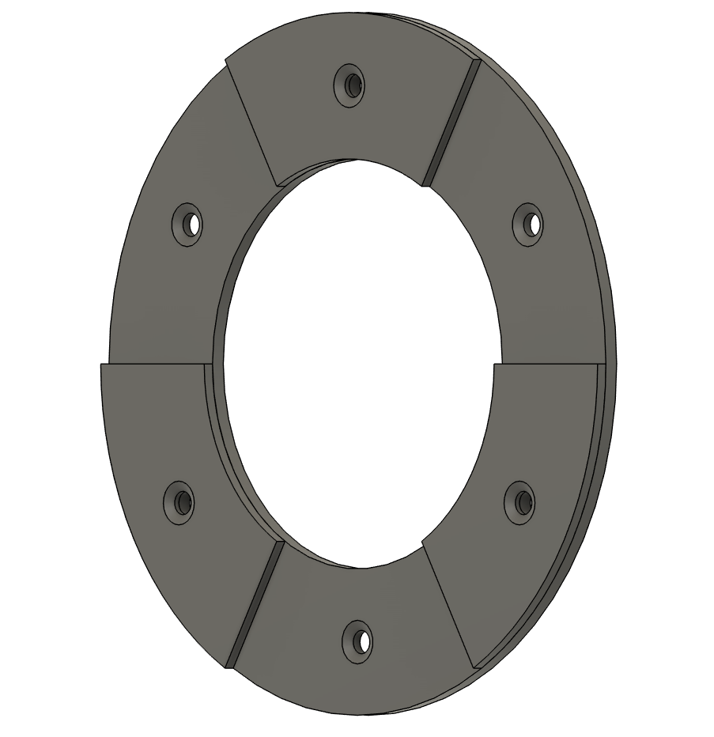
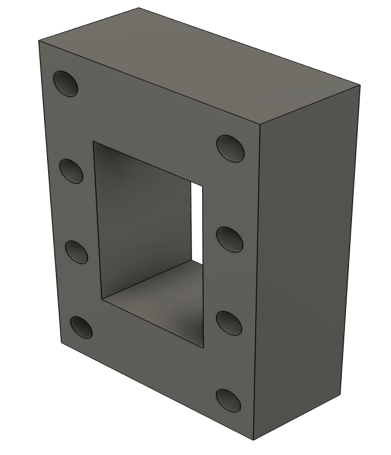
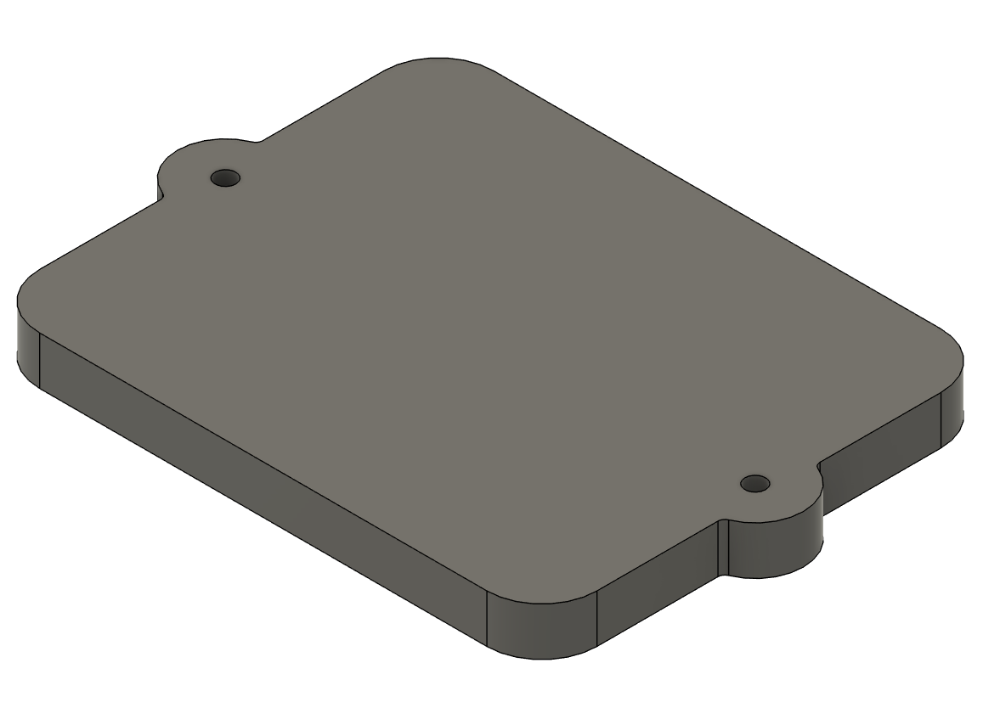
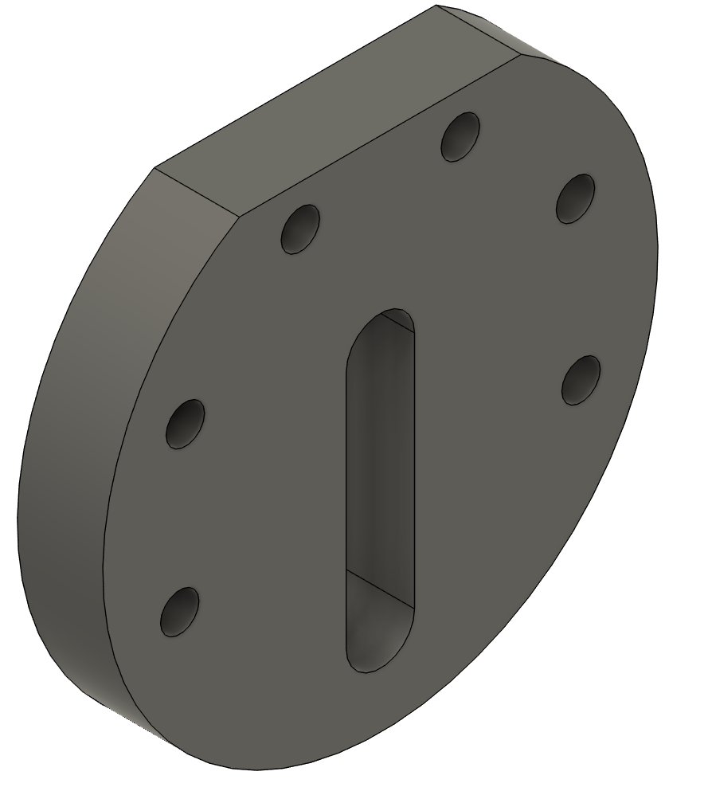
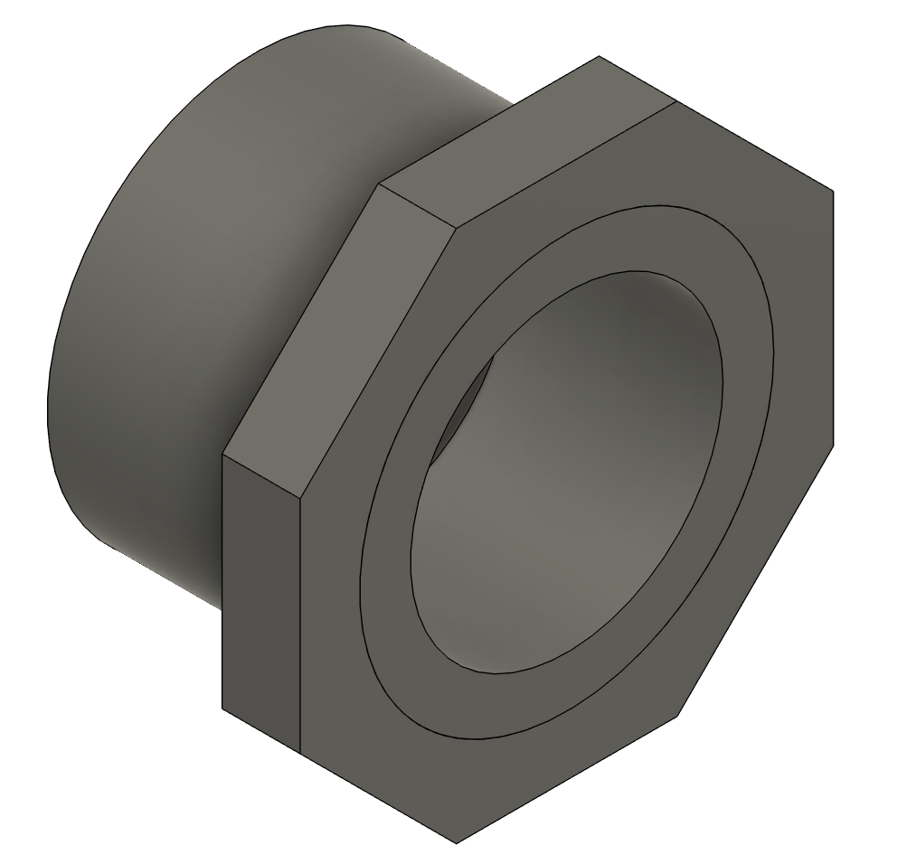
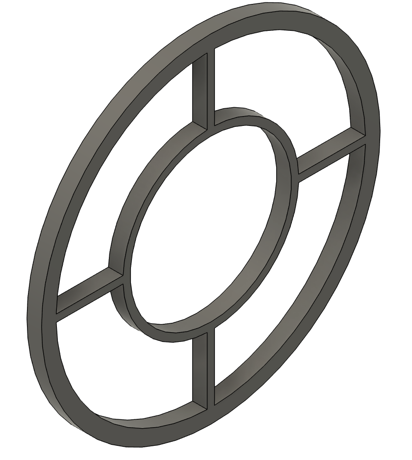
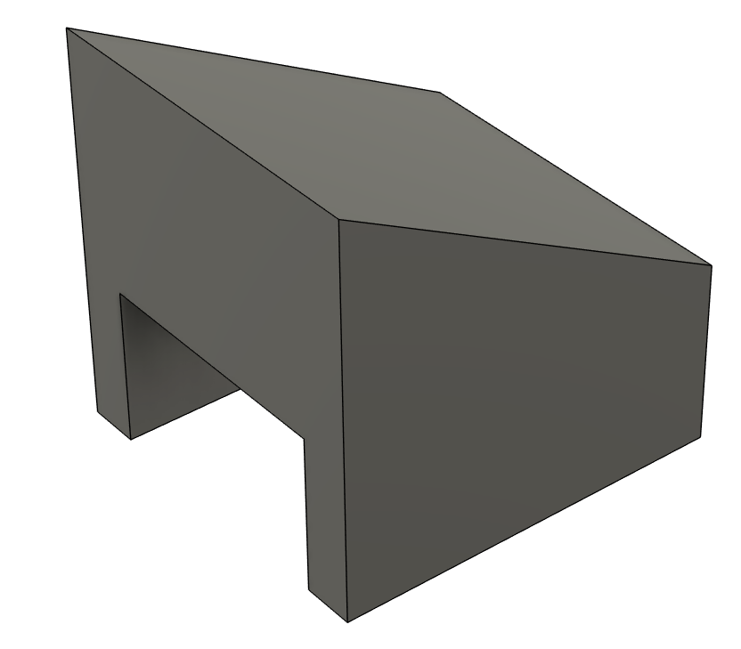
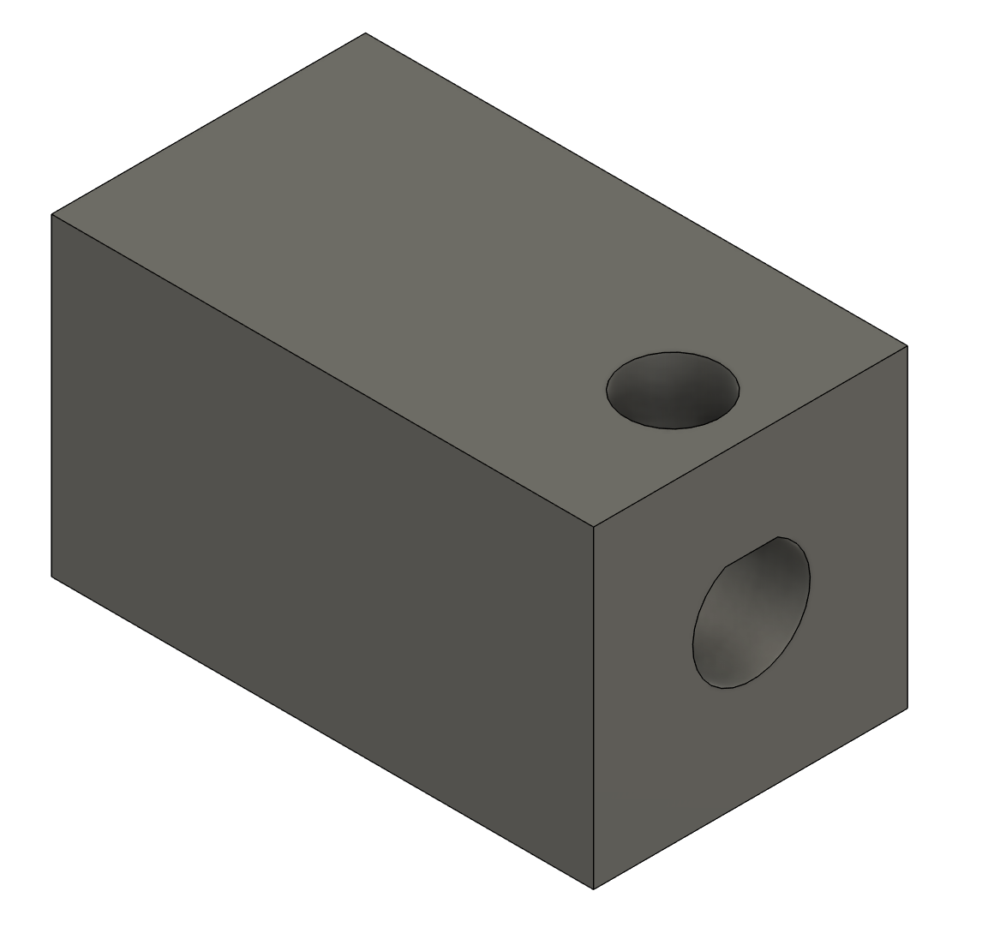
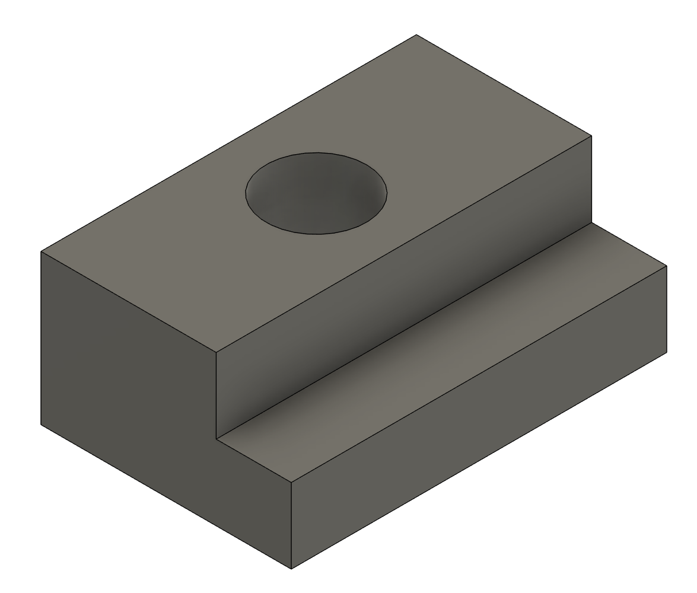
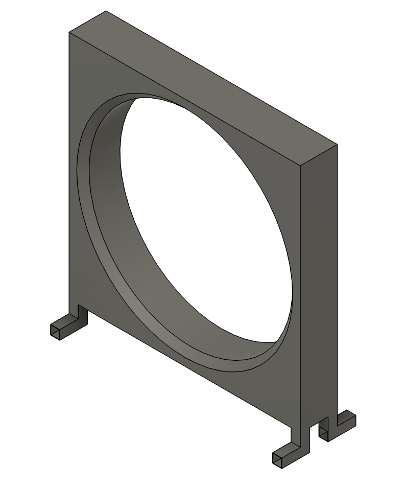
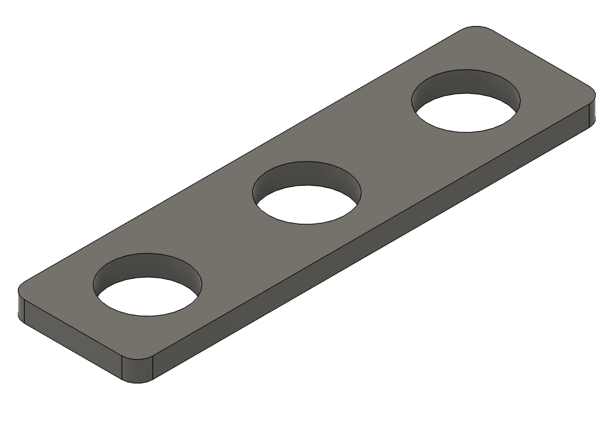
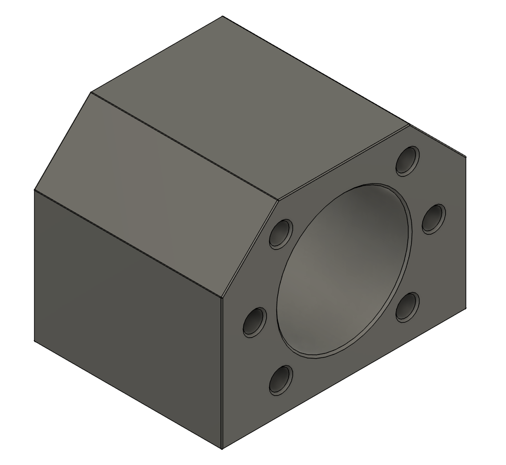
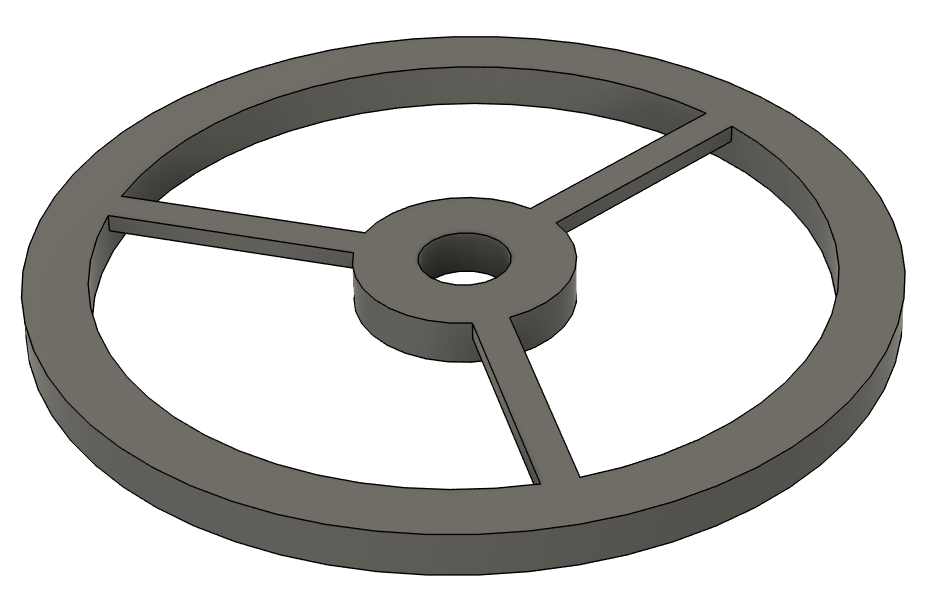
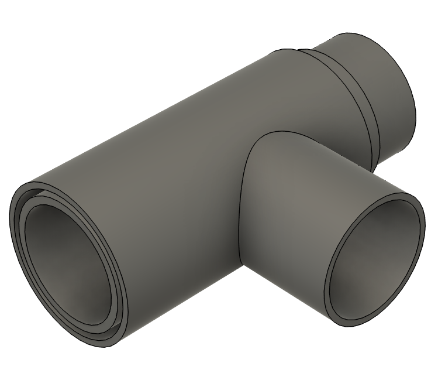
@article{tan2026img2cadseq,
title={Img2CADSeq: Image-to-CAD Generation via Sequence-Based Diffusion},
author={Tan, Shiyu and Zhao, Zixuan and Gao, Hao and Chen, Zhiheng and Yin, Xiaolong and Shen, Enya},
journal={arXiv preprint arXiv:2605.13293},
year={2026}
}